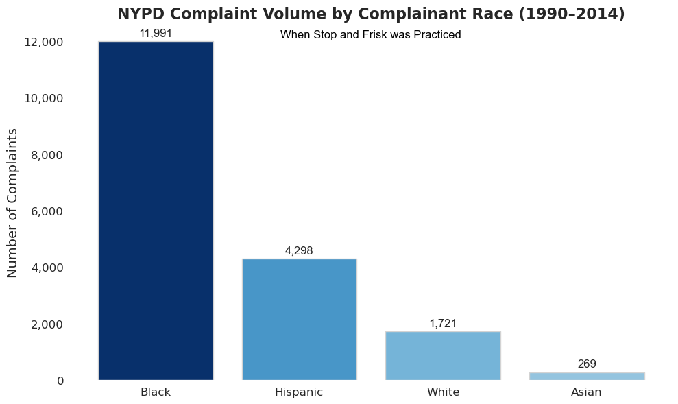
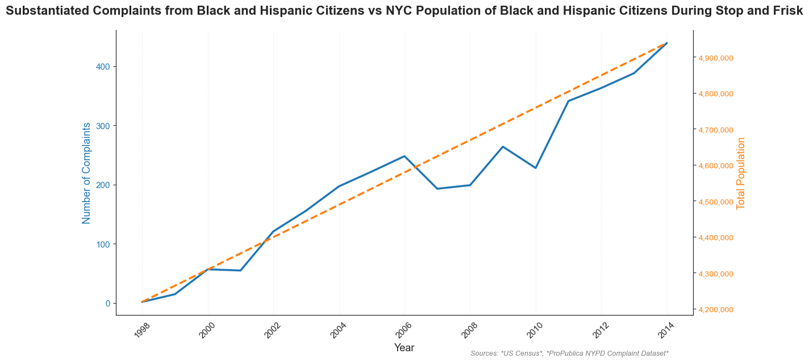

Proposition: The 'Stop and Frisk' Policing policy implemented in New York in 1990 (that grew in practice until 2014) unfairly affected Black and Hispanic people
FOR the Proposition

Design Decisions and Rationale:
- Different Shades of Blue corresponding with Volume of Complaints (+1): I wanted another quick way for the reader to understand the difference between races, and color seemed like an easy way in conjunction with the size of the 'Bar'.
- Organizing the x-axis from Most Complaints to Least (+2): To make it easier to compare between races, and to support my proposition, I organized
- Looking at Data from 1990-2014 (-1): It's very subjective whether policies enacted under David Dinkins lead to the implementation of Stop and Frisk or not. While some say he layed essential groundwork, other's say it pales in comparison to Bloomberg. A larger sample size of data makes a bigger gap of racial disparities.
AGAINST the Proposition

Design Decisions and Rationale:
- Two Y Axes (-.5): Makes the graph easier to read and interprete, but also allows for more manipulation with scale to heighten the comparison
- Cutting the Y-Axis from 1998-2014 (-1.5): The dataset didn't have any substanciated complaints from Black and Hispanic people from 1985-1998. In order to avoid the appearence of a growing trend, I just started the visualization at 1998. This doesn't capture the full scope of Stop and Frisk.
- Generalizing Population Data (-1.5): I got my population data from the US Census, which only collects every 3 years. My positve trend line is based off 1990, 2000, and 2010. This likely doesn't capture fluctuations from year to year that are picked up in the complaint data, and instead creates the appearence of consistent positive growth. While the data is true, the growth is likely not as linear.
Final Reflection
This project made me think deeply about how I could manipulate the data to create different narratives. Early on, I spent considerable time crafting a graph that clearly communicated the disproportionate impact of NYPD complaints on Black and Hispanic New Yorkers. I was focused on being both truthful and effective: dimming color palettes for clarity, emphasizing the broken windows era with visual metaphors, and sequencing racial categories by volume to highlight disparity. I wanted to find a proposition I believed in, all while trying to create the most effective visualization possible. This really set me up when trying to create my visualization against my proposition. It’s one thing to visualize what the data shows; it’s another to bend the framing of that data to support a contrary narrative. The challenge wasn’t just technical, it was rhetorical. I had to try dozens of framings—isolating time ranges, separating substantiated from unsubstantiated complaints, and aggregating complaints in ways that reduced visible disparities. Eventually, I plotted substantiated complaints alongside population trends using dual axes and selective time windows. Even though the chart was technically accurate, the impression it gave could be misleading. I don’t want to toot my own horn, but it actually seems pretty plausible. This gave me a great respect for how many stories you can tell with the same data. What seemed immediately clear to me when I was doing my EDA now becomes genuinely challenged. This project showed me how there really are two sides to every story, and the responsibility we have when making these visualizations. There are easy changes to make that can really extenuate certain trends. One small tweak can completely shift the narrative. It opened my eyes to how my initial perception can bias my understanding of the bigger picture. I spent the whole time trying to create something that essentially lied to the reader. At the end, I feel I did my best work when I actually told the truth, just a different truth. I don’t think I have a crazy takeaway about certain tools to make earnest vs unethical visualizations. It’s more that what defines earned or unethical is so subjective.